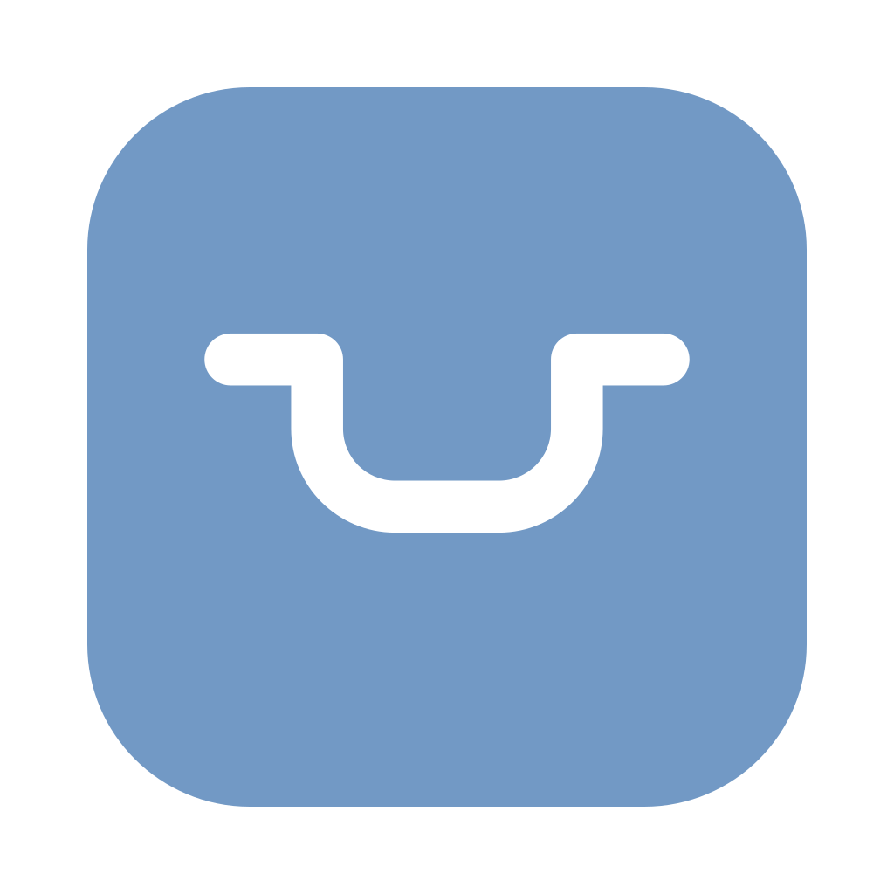
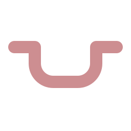

One line: the top edge of the screen dipping round the notch. On the notch it rests faint, lights when pointed at, and holds a card in its dip while Tuck holds something.

Windows, files, links and notes, kept in your notch until you want them.
Windows, files, links and notes, kept in your notch until you want them.
